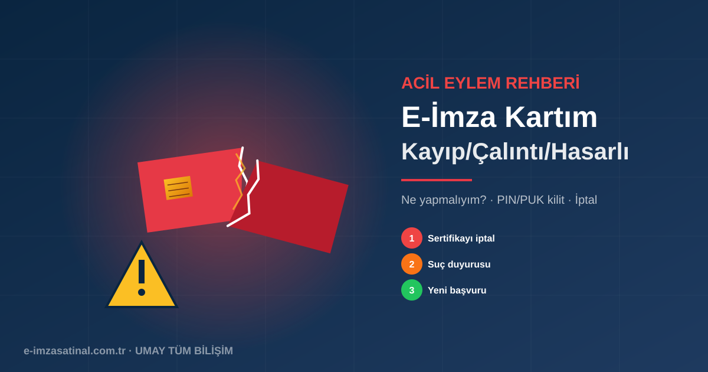

Neden Hızlı Hareket Etmelisiniz?
E-imza kartınız sizin dijital kimliğinizin fiziksel taşıyıcısıdır. Kart üçüncü şahsın eline geçerse ve PIN kodunuz da biliniyorsa, adınıza hukuki değeri ıslak imzaya eşit işlemler yapılabilir. Kayıp veya çalıntı durumunda saatler bile önemlidir.
Hasarlı kart durumunda ise farklı bir aciliyet var: kartınızın elektronik olarak okunamaması, çalışmakta olduğunuz beyanname/ihale/reçete sürecini durdurabilir. İkame süreci başlatmak için doğru adımları bilmek zaman kaybını önler.
1. Kayıp E-İmza — Ne Yapmalıyım?
Sakin Kalın, Aramaya Başlayın
Son 24 saatte kartı çıkardığınız yerleri (ofis çekmece, laptop çantası, araba) mantıklı bir sırayla arayın. Çoğu kayıp aslında geçici unutmadır.
Kart Yoksa: Derhal Sertifikayı İptal Ettirin
ESHS'ye (Ayyıldız veya bayisi UMAY TÜM BİLİŞİM) telefon veya WhatsApp ile ulaşın. TC kimlik numaranız ile sertifikanız iptal edilir. İptal sonrası kart artık işlem yapamaz.
Yeni Başvuru Yapın
İptal sonrası yeni bir e-imza almanız gerekir. Yeni başvuru süreci normal başvuruya benzer, 1-3 iş günü sürer.
2. Çalıntı E-İmza — Ne Yapmalıyım?
Çalıntı durumunda kayıptan daha ciddi bir risk vardır: kartı alan kişi hedef odaklı olabilir. Adımlar:
1. Derhal Sertifika İptali
Kayıp durumundaki gibi acil olarak ESHS'yi arayın. Çalıntı olduğunu açıkça belirtin — bazı ESHS'ler ekstra güvenlik önlemleri uygular.
2. Emniyete Suç Duyurusu
En yakın karakola veya online e-Devlet üzerinden hırsızlık suç duyurusu yapın. Tutanak numarası yeni başvuru sürecinde belge olarak kullanılabilir.
3. Kredi Notu Kontrolü
Kimliğinizin başka amaçlarla kullanılıp kullanılmadığını görmek için Findeks kredi notunuzu ve varsa banka hesaplarınızı kontrol edin.
4. Yeni E-İmza Başvurusu
İptal onayından sonra yeni e-imza başvurusu yapın. Süreç 1-3 iş günü.
3. Hasarlı E-İmza Kartı
Kart fiziksel olarak hasarlanmış (kırılmış, delinmiş, çipi çıkmış, USB portu bozulmuş) veya elektronik olarak okunamıyorsa:
Önce Test Edin
- Başka bir USB porta takın
- Başka bir bilgisayarda deneyin
- AKİS sürücüsünü güncelleyin
- Bilgisayarı yeniden başlatın
Yukarıdakiler işe yaramıyorsa kart gerçekten hasarlı olabilir.
Hasarlı Karttan Kurtarma
Kart hasarlıysa sertifika kart üzerinde saklı olduğu için genelde kurtarılamaz. Yani:
- Sertifika hala geçerlidir (iptal edilmemiştir) ama okunamaz
- Yeni bir karta aynı sertifikayı yükleme çoğunlukla mümkün değildir
- Genelde yeni başvuru gerekir
Bazı özel durumlarda (fabrikasyon hatası, garantili ürün) ücretsiz değişim mümkün olabilir. ESHS'nizle konuşun.
4. PIN Kilitlendi (3 Hatalı Deneme)
PIN kodunuzu 3 kez ardışık yanlış girerseniz kart geçici olarak bloke olur. Bu sorun görece kolay çözülür:
PUK Kodunu Bulun
Kart teslim edildiğinde ESHS/bayi tarafından size verilmiş olan PUK kodunu bulun. Genelde tesellüm evrakı, e-posta veya SMS ile iletilir.
AKİS'ten Kartı Aç
AKİS uygulamasında "PIN Değiştir" veya "Karti Aç" seçeneğini kullanın. PUK kodunu girin, yeni bir PIN belirleyin.
Kart Aktif
Yeni PIN ile kart tekrar kullanılabilir.
5. PUK Kilitlendi (5 Hatalı Deneme) — Kart Kalıcı Kilit
PUK kodunu 5 kez yanlış girerseniz kart kalıcı olarak kilitlenir. Bu durumda:
- Kart bir daha açılamaz
- Sertifika hala geçerli ama karta erişilemez
- Yeni başvuru gerekir
Kayıp/Çalıntı/Hasar Sonrası Yeni Başvuru Süreci
Herhangi bir sebeple yeni e-imza gerekiyor:
- Belge: Kimlik fotoğrafı (bireysel) veya vergi levhası + imza sirküleri (firma)
- Süre: 1-3 iş günü
- Fiyat: Standart e-imza paket fiyatı (2.750-4.000 TL)
- Kalan süre: Eski karttaki kalan süre yeni karta yansımaz (çoğunlukla). Yeni sertifikanın tam süresi verilir.
Kartınızı Nasıl Korursunuz?
Yaşanmış acı deneyimlere dayanarak öneriler:
- PIN'i asla yazmayın: Cüzdanınızda, bilgisayarınızda, e-postada PIN yazılmamalıdır.
- PIN'i kimseyle paylaşmayın: Aile, iş arkadaşı, teknik servis dahil.
- Kartı ayrı taşıyın: USB token'ı laptop çantasında değil, cebinizde veya kart cüzdanında.
- PUK'u güvenli sakla: PUK e-postasını farklı bir yerde arşivleyin.
- Yenileme takibi: Sertifika süresi bitmeden 1 ay önce hatırlatma kurun.